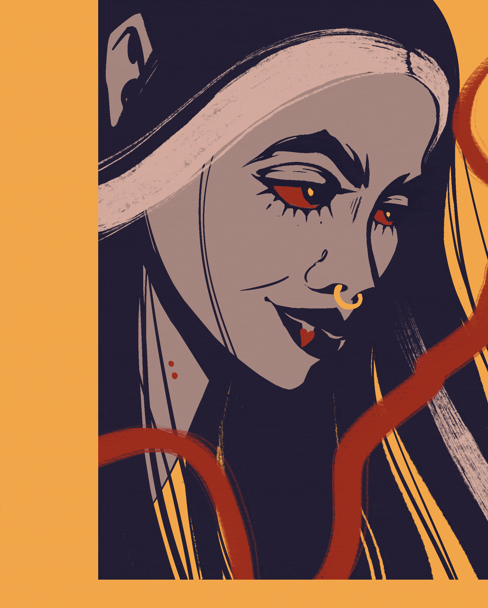

Vampire
Эта работа вдохновлена персонажем Марселин из "Adventure Time". Я хотела передать таинственную и мистическую атмосферу вампирского мира.
Назад в галерею
Эта работа вдохновлена персонажем Марселин из "Adventure Time". Я хотела передать таинственную и мистическую атмосферу вампирского мира.
Назад в галерею